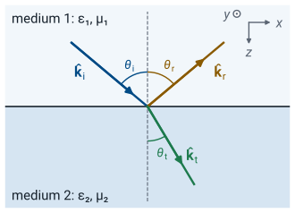
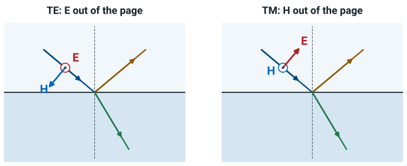
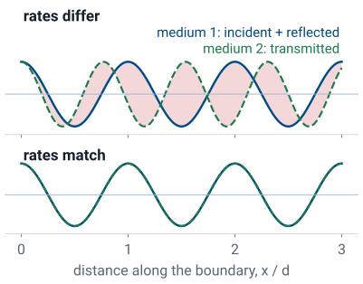
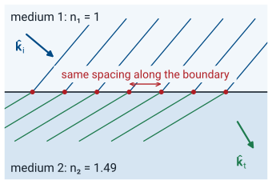
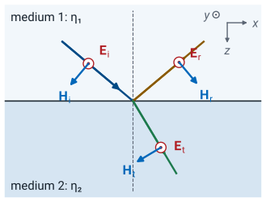
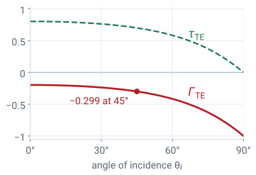

L39 - Oblique Incidence I#
Oblique Incidence I
Today we find where a plane wave goes, and how much of it reflects, when it meets a boundary at an angle.
Lesson 39 · Module 4: Dynamic Fields · Maj Ellis · Dr. Neil Rogers
Learning Objectives
- I can determine the reflection and transmission of UPW at a boundary for Transverse Electric (TE) and Transverse Magnetic (TM) waves, using boundary conditions.
Lesson 38 sent a uniform plane wave straight at a flat boundary and found the reflection and transmission coefficients from the boundary conditions of Lessons 24 and 31. Today the wave arrives at an angle. The same boundary conditions now decide two things. They fix the directions of the reflected and transmitted waves, which gives the law of reflection and Snell’s law. They also fix the amplitudes, but the answer depends on how the electric field is oriented, so we split every wave into two cases. Today we work the transverse electric (TE) case in full; Lesson 40 works the transverse magnetic (TM) case and the two angles that make oblique incidence useful.
Where We Were
At a boundary with no surface current or charge, the tangential fields match:
At normal incidence (Lesson 38):
Lesson 24 showed that the tangential electric field is continuous across any boundary, and Lesson 31 showed the same for the tangential magnetic field when no surface current flows, which is the case at a boundary between two dielectrics. As before, \(\hat{\mathbf{n}}\) is the unit normal from medium 2 into medium 1. Lesson 37 found that a uniform plane wave in a lossless material has its electric and magnetic fields perpendicular to each other and to the direction of travel, with magnitudes in the ratio of the intrinsic impedance \(\eta = \sqrt{\mu/\epsilon}\), which it derived. Lesson 38 applied the two boundary conditions to a wave that meets the boundary head-on. The reflection coefficient \(\Gamma\) is the ratio of the reflected electric field to the incident one at the boundary, and the transmission coefficient \(\tau\) is the same ratio for the transmitted field. Both have the form of Lesson 6’s load reflection coefficient, with the intrinsic impedances in place of the load and line impedances. Lesson 38 also derived, from Poynting’s theorem, the time-average power a plane wave carries per unit area, \(\vert E_0\vert^2/(2\eta)\) along its direction of travel; today we use it to find how the power divides at an angle.
A Wave at an Angle

We put the boundary in the plane \(z = 0\), with medium 1 at \(z < 0\) and medium 2 at \(z > 0\), so \(\hat{\mathbf{n}} = -\hat{\mathbf{z}}\). A plane wave that travels in the direction of the unit vector \(\hat{\mathbf{k}}\) has the phase \(\beta\ \hat{\mathbf{k}}\cdot\mathbf{r}\) at the point \(\mathbf{r} = \hat{\mathbf{x}}x + \hat{\mathbf{y}}y + \hat{\mathbf{z}}z\). When \(\hat{\mathbf{k}} = \hat{\mathbf{z}}\) this is the familiar \(\beta z\) of Lesson 37; for any other direction, the surfaces of constant phase are still planes perpendicular to \(\hat{\mathbf{k}}\). Here \(\beta = \omega\sqrt{\mu\epsilon}\) is the phase constant of the material the wave is in. We measure each angle from the normal. The incident direction and the normal together define the plane of incidence; we choose the \(x\) axis so that this is the \(xz\) plane, which makes the incident direction \(\hat{\mathbf{k}}_i = \hat{\mathbf{x}}\sin\theta_i + \hat{\mathbf{z}}\cos\theta_i\). The reflected wave travels back into medium 1 with \(\hat{\mathbf{k}}_r = \hat{\mathbf{x}}\sin\theta_r - \hat{\mathbf{z}}\cos\theta_r\), and the transmitted wave travels into medium 2 with \(\hat{\mathbf{k}}_t = \hat{\mathbf{x}}\sin\theta_t + \hat{\mathbf{z}}\cos\theta_t\). The two new angles, \(\theta_r\) and \(\theta_t\), are unknowns for now; the boundary conditions will set them.
Two Polarizations: TE and TM

TE: \(\widetilde{\mathbf{E}}\) along \(\hat{\mathbf{y}}\), perpendicular to the plane of incidence.
TM: \(\widetilde{\mathbf{H}}\) along \(\hat{\mathbf{y}}\); \(\widetilde{\mathbf{E}}\) lies in the plane.
The electric field of a plane wave is perpendicular to \(\hat{\mathbf{k}}\), which leaves it two directions to point in. One is \(\hat{\mathbf{y}}\), perpendicular to the plane of incidence and therefore parallel to the boundary. We call that wave transverse electric, because its electric field is transverse to the plane of incidence. The other direction lies in the plane of incidence; then the magnetic field points along \(\hat{\mathbf{y}}\), and we call the wave transverse magnetic. Any uniform plane wave, whatever its polarization in Lesson 37’s sense, is the sum of a TE wave and a TM wave with the same \(\hat{\mathbf{k}}\). Because the boundary conditions and Maxwell’s equations are linear, we can find the reflection of each part separately and add the results; the two parts reflect by different amounts. Lesson 38’s wave fits this scheme. At normal incidence any plane that holds \(\hat{\mathbf{z}}\) is a plane of incidence, and choosing the \(yz\) plane makes its \(\hat{\mathbf{x}}\)-directed electric field perpendicular to that plane, so Lesson 38’s wave is a TE wave.
Phase Matching
At \(z = 0\), for every \(x\) (TE, tangential \(\widetilde{E}_y\)):

Before we find any amplitudes, the boundary conditions already restrict the angles. We write the three electric fields of a TE wave with the incident amplitude \(E_0\) and the unknown amplitudes \(\Gamma_\text{TE}E_0\) and \(\tau_\text{TE}E_0\), and evaluate their phases on the boundary. At \(z = 0\) the phase \(\beta\ \hat{\mathbf{k}}\cdot\mathbf{r}\) reduces to \(\beta x\sin\theta\), because the \(z\) term vanishes. The tangential electric field must match at every point of the boundary, so the equation in the frame must hold for every value of \(x\), not only at the origin. Each term is an exponential in \(x\) with its own rate. A sum of exponentials with different rates cannot equal a third exponential at every \(x\). The figure plots the real part of each side for a case where the transmitted rate is 1.3 times the incident rate: the two sides agree at \(x = 0\), then move in and out of phase, and the shaded gap shows where the boundary condition fails. The incident term is not zero, so the equation can hold only if all three terms vary along the boundary at the same rate, as in the lower plot. That requirement is phase matching: the three waves must have the same phase variation along the boundary, which gives
$\(\beta_1\sin\theta_i = \beta_1\sin\theta_r = \beta_2\sin\theta_t\)$ The same argument applied to the TM wave, or to the magnetic field, gives the same result, because the exponents are the same.
Reflection and Snell’s Law

The first equality in phase matching, \(\beta_1\sin\theta_i = \beta_1\sin\theta_r\), gives \(\theta_r = \theta_i\): the law of reflection. For the second, we write \(\beta = \omega\sqrt{\mu\epsilon} = (\omega/c)\sqrt{\mu_r\epsilon_r}\) and define the refractive index \(n = \sqrt{\mu_r\epsilon_r}\), the ratio of the speed of light in free space to the phase velocity in the material. The factor \(\omega/c\) is common to both sides and cancels, which leaves Snell’s law, \(n_1\sin\theta_i = n_2\sin\theta_t\). The figure shows what phase matching means. Each line is a wavefront, a surface of constant phase, drawn one wavelength apart along its ray. A wavefront of the incident wave crosses the boundary at a point, and a wavefront of the transmitted wave must cross at the same point. Along the boundary the incident crossings are \(\lambda_1/\sin\theta_i\) apart, and the transmitted crossings must have the same spacing. Medium 2 has the shorter wavelength, so its fronts tilt to keep the spacing, and the transmitted wave travels closer to the normal. Going from air, \(n_1 = 1\), into acrylic, \(n_2 = 1.49\), at \(\theta_i = 45^\circ\), Snell’s law gives \(\sin\theta_t = \sin 45^\circ/1.49 = 0.4746\), so \(\theta_t = 28.33^\circ\).
The Fields of a TE Wave

The phases are the \(\beta\ \hat{\mathbf{k}}\cdot\mathbf{r}\) of each wave:
Each electric field points along \(\hat{\mathbf{y}}\), out of the page in the figure, with the incident amplitude \(E_0\) and the unknown amplitudes written as \(\Gamma_\text{TE}E_0\) and \(\tau_\text{TE}E_0\). We have already used \(\theta_r = \theta_i\). The figure draws each field for positive \(\Gamma_\text{TE}\) and \(\tau_\text{TE}\); a negative coefficient reverses that wave’s two fields together. Each magnetic field lies in the plane of the page, perpendicular to its ray, and the next frame finds it.
The Magnetic Fields of a TE Wave
\(\widetilde{\mathbf{H}} = \hat{\mathbf{k}}\times\widetilde{\mathbf{E}}/\eta\), with each phase factor \(e^{-j\psi}\) as before:
Each magnetic field comes from Lesson 37’s relation for a plane wave, \(\widetilde{\mathbf{H}} = \hat{\mathbf{k}}\times\widetilde{\mathbf{E}}/\eta\), with the wave’s own direction and intrinsic impedance, and it carries the same phase factor as its electric field. For the incident wave,
using \(\hat{\mathbf{x}}\times\hat{\mathbf{y}} = \hat{\mathbf{z}}\) and \(\hat{\mathbf{z}}\times\hat{\mathbf{y}} = -\hat{\mathbf{x}}\). The reflected wave’s direction has \(-\hat{\mathbf{z}}\cos\theta_i\) in place of \(+\hat{\mathbf{z}}\cos\theta_i\), which flips the sign of its \(x\) component, as the figure on the previous frame shows. The transmitted wave uses \(\theta_t\), \(\beta_2\), and \(\eta_2\).
The TE Boundary Conditions
At \(z = 0\), after phase matching cancels the common phase factor, tangential \(\widetilde{E}_y\) and then \(\widetilde{H}_x\) give
The tangential components at the boundary are the \(x\) and \(y\) components. The electric field has only a \(y\) component, and it must be the same on both sides: the incident and reflected fields add in medium 1 and equal the transmitted field in medium 2. Dividing by \(E_0\) gives the first equation. The magnetic field has a tangential \(x\) component and a normal \(z\) component, and only the \(x\) component enters this condition. In medium 1 it is \(-E_0\cos\theta_i/\eta_1\) from the incident wave plus \(\Gamma_\text{TE}E_0\cos\theta_i/\eta_1\) from the reflected wave; in medium 2 it is \(-\tau_\text{TE}E_0\cos\theta_t/\eta_2\). Setting them equal and dividing by \(-E_0\) gives the second equation. Phase matching makes every exponential on the boundary equal to the same \(e^{-j\beta_1 x\sin\theta_i}\), so it divides out and the two equations hold at every \(x\).
The TE Coefficients
With \(a = \eta_2\cos\theta_i\) and \(b = \eta_1\cos\theta_t\):
The first condition gives \(\tau_\text{TE}\) in terms of \(\Gamma_\text{TE}\), so we substitute \(1 + \Gamma_\text{TE}\) for \(\tau_\text{TE}\) in the second and multiply both sides by \(\eta_1\eta_2\). That gives the first line, with one unknown, where we write \(a = \eta_2\cos\theta_i\) and \(b = \eta_1\cos\theta_t\) to keep the algebra short. Expanding both sides gives
and collecting the \(\Gamma_\text{TE}\) terms on one side and dividing gives the reflection coefficient. Adding one and putting the sum over the common denominator gives the transmission coefficient. In full,
We find \(\theta_t\) first from Snell’s law, and then each coefficient is a number.
Two Checks on the TE Result
\(\theta_i = 0\): \(\theta_t = 0\), and \(\Gamma_\text{TE}\) becomes Lesson 38’s \(\Gamma\).
\(\theta_i \to 90^\circ\): \(\cos\theta_i \to 0\), so \(\Gamma_\text{TE} \to -1\).
At normal incidence, Snell’s law gives \(\theta_t = 0\), both cosines are one, and the TE coefficients reduce to Lesson 38’s, \(\Gamma = (\eta_2 - \eta_1)/(\eta_2 + \eta_1)\). They must: at normal incidence the plane of incidence is not defined, so the TE and TM cases describe the same wave, and Lesson 40 shows that \(\Gamma_\text{TM}\), with its sign convention, also reduces to Lesson 38’s \(\Gamma\). At the other extreme, a wave that arrives at grazing incidence, traveling almost along the boundary, reflects completely with its electric field reversed, for any pair of materials. This is why a smooth surface such as a road or a lake looks like a mirror when we view it at a low angle.
Reflection Against Angle

Air into acrylic, \(n_2 = 1.49\): \(\Gamma_\text{TE}\) runs from \(-0.197\) at normal incidence to \(-1\).
The plot shows both TE coefficients for a wave in air striking acrylic. For a nonmagnetic material, \(\eta = \eta_0/n\), so acrylic has \(\eta_2 = 376.7/1.49 = 252.8\ \Omega\). At normal incidence \(\Gamma_\text{TE} = -0.197\), and \(\vert\Gamma_\text{TE}\vert\) grows steadily with angle until the wave reflects completely at grazing incidence. The reflection coefficient stays negative and real at every angle: going into a material with a larger refractive index, the reflected electric field is reversed with respect to the incident one, as it was at normal incidence in Lesson 38. The transmission coefficient falls from \(0.803\) to zero.
Power Across the Boundary
Power through an area \(A\) of the boundary, for each wave:
Lesson 38 derived from Poynting’s theorem that a plane wave carries the time-average power density \(\vert E_0\vert^2/(2\eta)\) along its direction of travel \(\hat{\mathbf{k}}\). The power that crosses an area \(A\) of the boundary is the component of that density along the normal, times \(A\); the normal component is the density times \(\cos\theta\), the cosine of the angle between \(\hat{\mathbf{k}}\) and the normal. That gives the first equation. Applied to each wave,
Dividing by \(P_i\) gives the reflected fraction \(R\) and the transmitted fraction \(T\). The reflected wave travels in the same medium as the incident wave and at the same angle, so only \(\vert\Gamma_\text{TE}\vert^2\) survives; the transmitted wave has both a different intrinsic impedance and a different angle. To check that no power is lost, we use the coefficient frame’s \(a = \eta_2\cos\theta_i\) and \(b = \eta_1\cos\theta_t\), with \(\Gamma_\text{TE} = (a - b)/(a + b)\) and \(\tau_\text{TE} = 2a/(a + b)\), and note that the factor \(\eta_1\cos\theta_t/(\eta_2\cos\theta_i)\) in \(T\) is \(b/a\). Then
so in lossless media the reflected and transmitted waves together carry away exactly the incident power.
Worked Example: Air into Acrylic at 45°
With \(\theta_i = 45^\circ\), \(n_1 = 1\), and \(n_2 = 1.49\), Snell’s law gives \(\theta_t = 28.33^\circ\).
Worked example — a TE wave on acrylic
A TE wave in air strikes a flat acrylic surface at \(\theta_i = 45^\circ\). Acrylic is nonmagnetic, with \(n = 1.49\) at visible wavelengths, so \(\epsilon_r = n^2 = 2.22\). Find the transmitted angle, the two TE coefficients, and the fraction of the incident power that reflects.
Snell’s law gives \(\theta_t = 28.33^\circ\). The intrinsic impedances are \(\eta_1 = 376.7\ \Omega\) and \(\eta_2 = 376.7/1.49 = 252.8\ \Omega\). With \(\cos 45^\circ = 0.7071\) and \(\cos 28.33^\circ = 0.8802\), the numerator of \(\Gamma_\text{TE}\) is \(252.8\times0.7071 - 376.7\times0.8802 = 178.8 - 331.6 = -152.8\) and the denominator is \(178.8 + 331.6 = 510.4\), so \(\Gamma_\text{TE} = -0.299\) and \(\tau_\text{TE} = 0.701\).
From the power frame, the reflected fraction is \(R = \vert\Gamma_\text{TE}\vert^2 = 0.090\), so \(9.0\%\) of the incident power reflects. The transmitted fraction is not \(\vert\tau_\text{TE}\vert^2 = 0.491\); with both factors it is \(T = 0.491\times(376.7/252.8)\times(0.8802/0.7071) = 0.910\), so the other \(91.0\%\) enters the acrylic, and \(R + T = 1\).
Summary
Symbol / idea |
What it is |
Result |
|---|---|---|
\(\hat{\mathbf{k}}\) |
Unit vector along the direction of travel |
Phase \(\beta\ \hat{\mathbf{k}}\cdot\mathbf{r}\) |
Plane of incidence |
Holds \(\hat{\mathbf{k}}_i\) and the normal |
The \(xz\) plane |
TE |
\(\widetilde{\mathbf{E}}\) perpendicular to the plane of incidence |
\(\widetilde{\mathbf{E}}\) along \(\hat{\mathbf{y}}\) |
TM |
\(\widetilde{\mathbf{H}}\) perpendicular to the plane of incidence |
\(\widetilde{\mathbf{H}}\) along \(\hat{\mathbf{y}}\) (Lesson 40) |
Phase matching |
Same phase variation along the boundary |
\(\beta_1\sin\theta_i = \beta_1\sin\theta_r = \beta_2\sin\theta_t\) |
Law of reflection |
\(\theta_r = \theta_i\) |
|
Snell’s law |
\(n = \sqrt{\mu_r\epsilon_r} = c/v_p\) |
\(n_1\sin\theta_i = n_2\sin\theta_t\) |
\(\Gamma_\text{TE}\) |
Reflected over incident \(\widetilde{E}_y\) |
\(\frac{\eta_2\cos\theta_i - \eta_1\cos\theta_t}{\eta_2\cos\theta_i + \eta_1\cos\theta_t}\) |
\(\tau_\text{TE}\) |
Transmitted over incident \(\widetilde{E}_y\) |
\(1 + \Gamma_\text{TE}\) |
Power through area \(A\) |
Normal component of \(\vert E\vert^2/(2\eta)\) |
\(\vert E\vert^2 A\cos\theta/(2\eta)\) |
Reflected power \(R\) |
Fraction of the incident power |
\(\vert\Gamma_\text{TE}\vert^2\) |
Transmitted power \(T\) |
Fraction of the incident power |
\(\vert\tau_\text{TE}\vert^2\eta_1\cos\theta_t/(\eta_2\cos\theta_i) = 1 - R\) |
Practice
Where This Is Going
Lesson 40: the TM coefficients, the Brewster angle, where TM reflection vanishes, and total internal reflection.
Lesson 41: the Incidence Lab.
Today we derived the directions of the reflected and transmitted waves for any polarization, and the amplitudes for a TE wave. Lesson 40 repeats the amplitude calculation for the TM wave. Its reflection coefficient behaves differently: it passes through zero at one angle, the Brewster angle. Lesson 40 also asks what Snell’s law means when it gives \(\sin\theta_t > 1\), which happens for a wave leaving a material with a larger refractive index at a steep angle; then all of the incident power reflects. Lesson 41 is the Incidence Lab.
Before Lesson 40, read section 5.7 of Ellingson, Electromagnetics, Vol. 2.